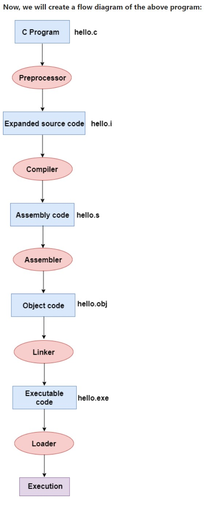

Compilation process in c
The compilation is a process of converting the source code into object code. It is done with the help of the
compiler. The compiler checks the source code for the syntactical or structural errors, and if the source
code
is error-free, then it generates the object code.
The c compilation process converts the source code taken as input into the object code or machine code. The
compilation process can be divided into four steps, i.e., Pre-processing, Compiling, Assembling, and
Linking.
The preprocessor takes the source code as an input, and it removes all the comments from the source code.
The
preprocessor takes the preprocessor directive and interprets it. For example, if
The following are the phases through which our program passes before being transformed into an
executable
form:
- Preprocessor
- Compiler
- Assembler
- Linker
Preprocessor
The source code is the code which is written in a text editor and the source code file is given an extension ".c". This source code is first passed to the preprocessor, and then the preprocessor expands this code. After expanding the code, the expanded code is passed to the compiler.
Compiler
The code which is expanded by the preprocessor is passed to the compiler. The compiler converts this code into assembly code. Or we can say that the C compiler converts the pre-processed code into assembly code.
Assembler
The assembly code is converted into object code by using an assembler. The name of the object file generated by the assembler is the same as the source file. The extension of the object file in DOS is '.obj,' and in UNIX, the extension is 'o'. If the name of the source file is 'hello.c', then the name of the object file would be 'hello.obj'.
Linker
Mainly, all the programs written in C use library functions. These library functions are pre-compiled, and
the
object code of these library files is stored with '.lib' (or '.a') extension. The main working of the linker
is
to combine the object code of library files with the object code of our program. Sometimes the situation
arises
when our program refers to the functions defined in other files; then linker plays a very important role in
this. It links the object code of these files to our program. Therefore, we conclude that the job of the
linker
is to link the object code of our program with the object code of the library files and other files. The
output
of the linker is the executable file. The name of the executable file is the same as the source file but
differs
only in their extensions. In DOS, the extension of the executable file is '.exe', and in UNIX, the
executable
file can be named as 'a.out'. For example, if we are using printf() function in a program, then the linker
adds
its associated code in an output file.
Let's understand through an example.
hello.c
#include
int main()
{
printf("Hello javaTpoint");
return 0;
}

In the above flow diagram, the following steps are taken to execute a program:
- Firstly, the input file, i.e., hello.c, is passed to the preprocessor, and the preprocessor converts the source code into expanded source code. The extension of the expanded source code would be hello.i.
- The expanded source code is passed to the compiler, and the compiler converts this expanded source code into assembly code. The extension of the assembly code would be hello.s.
- This assembly code is then sent to the assembler, which converts the assembly code into object code.
- After the creation of an object code, the linker creates the executable file. The loader will then load the executable file for the execution.